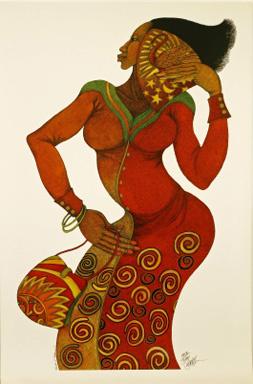
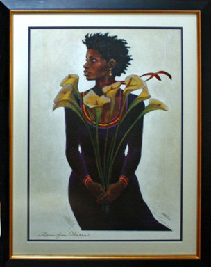
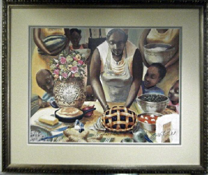
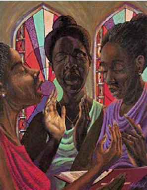
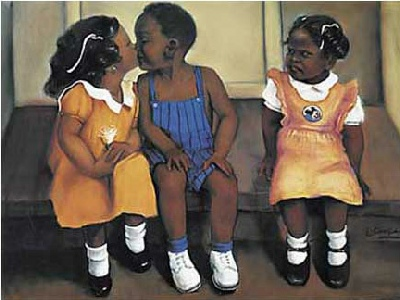

African-American Art
Ladies In Red
Charles Bibbs

Summe
Charles Bibbs
Summe
Charles Bibbs
More Lillies
Charles Bibbs

Lillies (framed)
Charles Bibbs
Lillies (framed)
Charles Bibbs
Drifti
John Holyfield
Grown And Sexy
John Holyfield

Mama's Table (framed)
John Holyfield
Mama's Table (framed)
John Holyfield
Heart And Soul
John Holyfield

The Poet
John Holyfield

Sweet Gospel Trio
John Holyfield
Sweet Gospel Trio
John Holyfield
The Flutist
John Holyfield
Soul Heaven
John Holyfield
The Dance
John Holyfield

Pearls
John Holyfield
Peace Within
Laurie Cooper

He's Mine
Laurie Cooper
He's Mine
Laurie Cooper
Eye to Eye
Albert Fennel
Angel of Hope
Edward Clay Wright

Illuminate My Path
Edward Clay Wright
Tuskegee Airmen
Edward Clay Wright

Original Acrylic Painting
29”x21.5” Framed

Sunset
Consuelo Gamboa
Signed Canvas Print
22”x21.5” Framed
We have a wide variety of African-American art, contact us if you are looking for a specific piece. It’s possible we have it.
© Copyright 2024